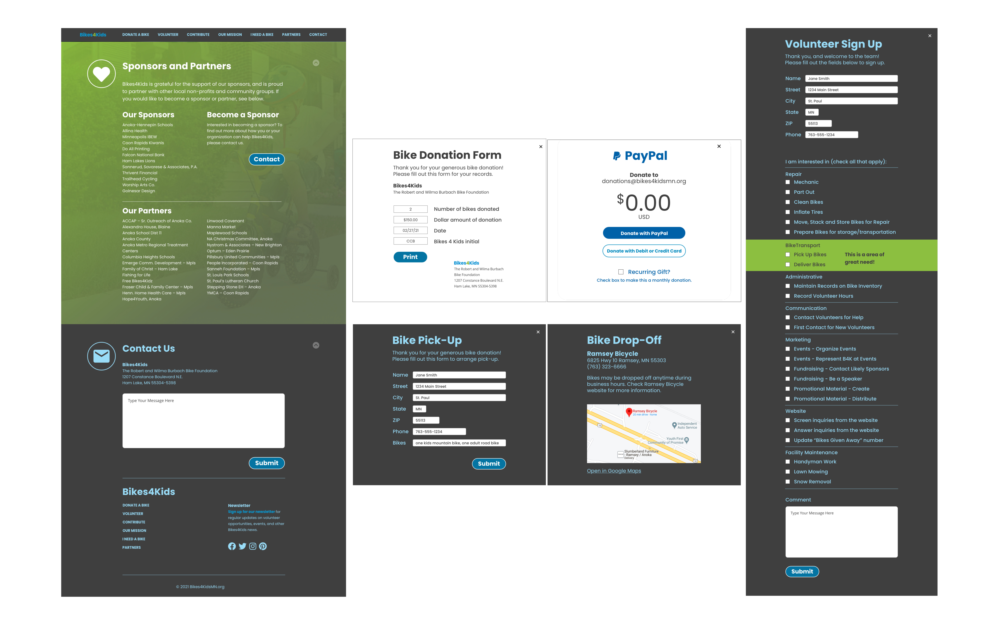
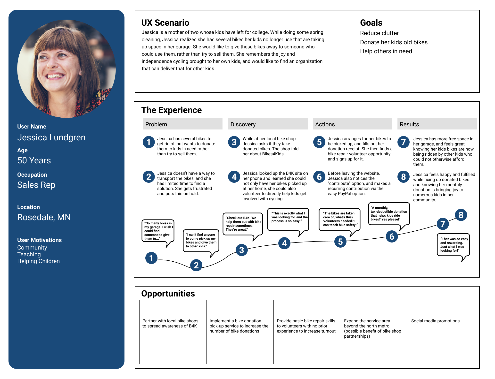
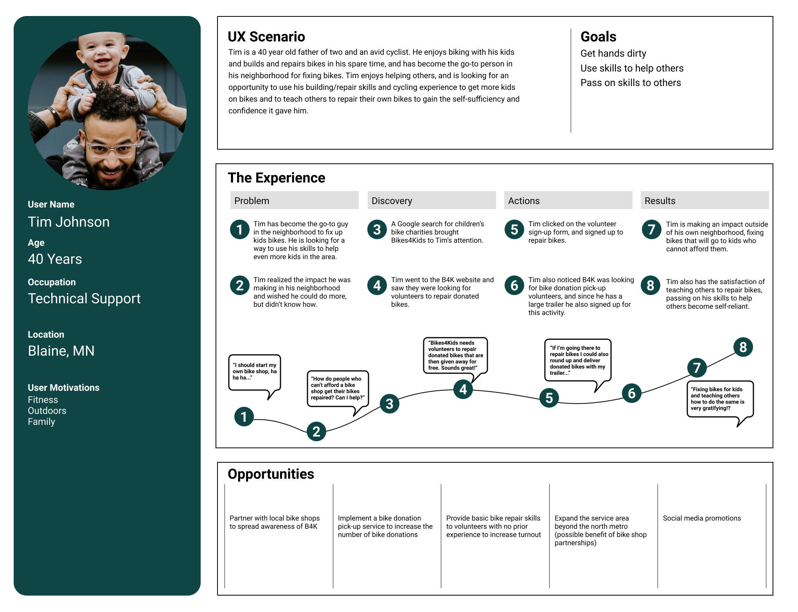
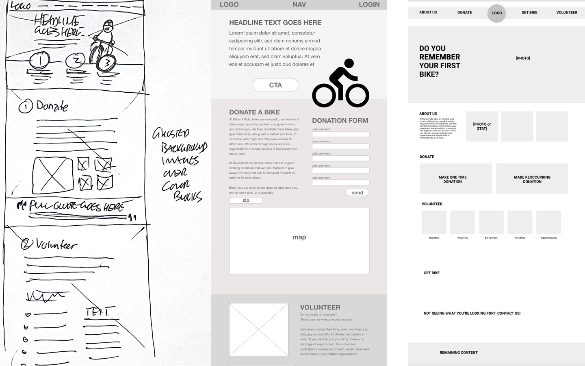

The existing Bikes4Kids site lacks a clear conversion funnel and content hierarchy, which, combined with a busy layout design leaves users disoriented and unsure of where to start. There is no mobile version, which limits the reach of the organization and eliminates a large sector of potential users/conversions.
Redesign the site to incoporate prominent Calls To Action that funnel users into the three main conversion channels: bike donations, volunteer sign-ups, and financial contributions. Reorganize and simplify content to create information hierarchies that guide the user and eliminate sensory overload. Create a responsive layout that works across desktop and mobile platforms.
Chris Van Ert (UX, UI, Prototyping)
Megan Weaver (UX, UI)
Li Harmon (UX)
3-week timeframe, Remote Collaboration
UX research, UI design, Prototypes, User Testing
Adobe XD, Adobe Color, Adobe Photoshop, InVision, Miro, Figma, Unsplash
Clicking through the site revealed several issues that negatively impact the user's experience.
Sites that served a similar purpose were anaylized for features that added value for users and stakeholders, and provided competitive advantages in the market. Competitor advantages currently include: more prominent/visible CTAs, detailed process descriptions, link to buy needed materials.
Only 35% of survey participants responded that they had a bike to donate, but close to 80% indicated a willingness to volunteer. Of that group, the biggest response was for delivering donated bikes, which is a service B4K currently doesn't provide.
User interviews revealed two distinct groups of users: those who had bikes to donate and those who wanted to volunteer (delivery, work on bikes, etc.). These two groups formed the basis for the user personas and the key insights below.
The user research indicated that people are willing to donate time, bikes, and money to the organization, but 76% of users don't have bikes to donate, and 32% of users who have bikes to donate would only donate if they could be picked up.
At the same time, our survey results revealed that the majority of respondants who indicated they would volunteer also indicated they would volunteer for bike pick-up/delivery.
Redesign should emphasize pick-up feature if it can be implemented. Make it the most-visible volunteer option to drive sign-ups.
Two main personas emerged from the interviews/surveys, and will drive the redesigned user flow and funnel.
Jessica is a 50 year old sales rep whose kids have left for college. She has a garage full of bikes that no longer get used, and is looking for a place to donate them rather than try to sell them.
Tim is a 40 year old father of two and an avid cyclist. He enjoys biking with his kids and builds and repairs bikes in his spare time. He is looking for an opportunity to use his building/repair skills to get more kids on bikes.
The existing user flow for B4K contains many unnecessary steps, requires the user to follow external links — many of which dead-end and require the user to do their own research, contains cumbersome forms that require personal contact information, and lacks conversion funnels. The proposed changes to the site are as follows:
Jessica solves her clutter issue, and discovers volunteer and community service opportunities along the way.
Tim finds a channel for his mechanical skills that allows him to give back to his community and empower others.
Pencil sketches and lo-fidelity wireframes were made to test layout concepts. All were brought into Adobe XD and refined into mid-fi wireframes. A round of user testing determined the best layout to proceed with, and the UI design was further developed.
A one-page site will help organize content and funnel users to drive conversions. The main navigation will be a sticky navbar at the top of the screen, with duplicate links in the footer (hamburger menu for mobile version). The three main conversion items will be given prominent CTAs in the hero section for immediate impact.
Main goals:
Five user tests were conducted covering the following:
Users were able to complete the tasks successfully without major issues. User feedback and notes taken during the testing revealed a few areas where improvement could be made. The two CTA buttons in the "Donate" section were too similar, so the sizes and colors were changed to create more differenciation. The volunteer sign up form eliminated some of the personal information that was currently required, and the pick-up/deliver signup option was highlighted to increase volunteers.
Style guide providing reference for: overall tone, typography, color, logo usage, buttons, images, UI patterns.
Colors were kept fun/inviting but moved away from primary kids colors. Ghosted photos were used on the desktop site to add a subtle element to the background colors.
Guidelines for accessability are also provided, calling out font/background color combinations that are at least AA compliant, and AAA compliant when possible.
The Bikes 4 Kids website lacked an effective conversion funnel, the layout and design were quite busy which created confusion among users, and the lack of a mobile-friendly version limited access. The redesign features a simplified layout with clear navigation and prominent CTAs that funnel users to the three main conversion targets. Designing with the mobile version in mind from the outset enabled a unified look across platforms and expanded the reach of the organization to increase bike donations, volunteer sign-ups, and financial contributions.